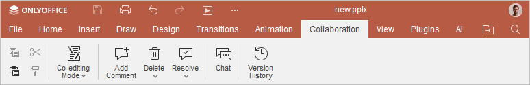
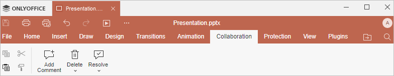

Kartica Saradnja
Kartica Saradnja u Presentation Editor-u omogućava zajednički rad na prezentacijama. U online verziji možete deliti fajl, izabrati režim zajedničkog uređivanja i upravljati komentarima. U režimu komentarisanja možete dodavati i uklanjati komentare i koristiti čet. U desktop verziji možete samo upravljati komentarima.
Odgovarajući prozor Online Presentation Editor-a:

Odgovarajući prozor Desktop Presentation Editor-a:

Korišćenjem ove kartice možete:
- podesiti postavke deljenja (dostupno samo u online verziji),
- prebacivati se između režima zajedničkog uređivanja Strogi i Brzi (dostupno samo u online verziji),
- dodavati komentare u prezentaciju i uklanjati ih,
- otvoriti panel Čet (dostupno samo u online verziji),
- pratiti istoriju verzija (dostupno samo u online verziji).